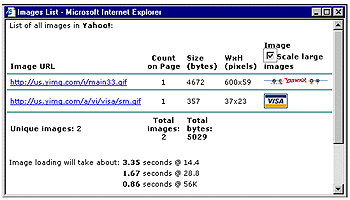
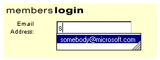

|
| ||
|
| ||
Will Friedman
Microsoft Corporation
Updated March 8, 1999
The following article was originally published in Site Builder Magazine (now known as MSDN Online Voices).
Because Internet Explorer 5 is coming very soon, we wanted to put together this summary for you of the key things you should be thinking about to prepare your Web sites to take advantage of this new release.
One of the first things you'll notice about Internet Explorer 5 is how fast it is. Speed is a major focus for this release. In testing, we have found that typical pages render 20-25 percent faster in Internet Explorer 5 than in Internet Explorer 4.0. But you can do even more to speed up your site, quickly and easily, without affecting older browsers.
The first way to increase download speed is to use the CSS2 fixed-layout property on all of your tables. The fixed-layout property allows the browser to start drawing your tables right away, rather than calculating the size first and then rendering. You can add this tag without affecting any older browsers (including Netscape Navigator, WebTV, and others).
<TABLE STYLE="table-layout:fixed">. . . </TABLE>
See the fixed-table section of the MSDN Online Web Workshop performance guide for more details.
Items that are stored in the cache render much more quickly than those that have to come over the Internet. By modifying the EXPIRES HTTP header, you can make pages, or even individual images on pages, come from the cache rather than from your server.
For example, let's say you have a logo on your home page that seldom changes. This file can be marked so that it doesn't expire for several months -- and the user doesn't have to wait for it to download, because it hasn't changed. After the first time the logo is downloaded, the logo will come from the cache rather than from your Web server until the expiration date is reached. If at some point you decide to change your logo after all, you can just rename the image file and the previous EXPIRES settings will no longer apply. See the EXPIRES section of the Web Workshop performance guide for more details.
In addition, Internet Explorer 5 introduces a revolutionary new cache-control mechanism (called post-check and pre-check). You can use this header even though some of your users don't have Internet Explorer 5, since older browsers (and browsers from other companies) will ignore these headers. Your Internet Explorer 5 users will still get the benefit. These two headers enable items to appear faster because they are displayed from the cache, and then the cache is updated with the latest copy from your Web server. The next time the user visits the page, the updated version of the item will be displayed. Say that the item in question is an image. The sequence goes like this:
From now on, the image will come from the cache, enabling the page to load quickly, and then the cache will be updated from the server.
While this setting might not be useful for data such as stock quotes, which are always changing, it is perfect for data that changes once in a while, but does not need to be updated every time. For example, the MSN.com site's navigation user interface is marked with the post-check and pre-check settings, because it doesn't change often; information such as news headlines, which change frequently, are displayed in an <IFRAME> with a different cache-control setting.
The following guide may help you decide when to use which cache-control mechanism:
| Constantly changing content | Content that changes sporadically | Relatively static Content | |
|---|---|---|---|
| Usage example | Stock Quotes | Site navigation | Company logo |
| Cache-control settings example | Expire content immediately (e.g., Expires: 0) | Use post-check and pre-check (e.g., Cache-control: post-check=50, pre-check=100) | Expire content far in the future. (e.g., Expires: Thu, 01 Dec 2000 16:00:00 GMT) |
You can find more information about this in the Cache-Control Extensions section of the Web Workshop performance guide.
One complaint I have heard from designers is that Internet Explorer doesn't provide an easy way to find out the sizes of the images on a page -- either in terms of pixels and bytes. Internet Explorer 5 addresses this in two ways. First, when you right-click on an image and choose properties, the properties dialog shows you the image's dimensions in pixels (width by height) and size in bytes.
In addition, one of the new Internet Explorer 5 Web accessories  is an image tool. Once you install the Web accessory, you can right-click on any Web page and choose Images List. This will then give you a summary of all the images on a page, their dimensions and sizes in pixels and bytes, and an estimated download time for all the images on the page.
is an image tool. Once you install the Web accessory, you can right-click on any Web page and choose Images List. This will then give you a summary of all the images on a page, their dimensions and sizes in pixels and bytes, and an estimated download time for all the images on the page.

Click the image to see a larger version in a new window.
Incidentally, the Web accessories also include a tool that adds an "Open Frame in New Window" link to the browser context menu.
AutoComplete speeds the collection of demographic information by making it easier to fill out online forms. AutoComplete provides a drop-down list of items that the user has previously entered in a particular text box on a Web page. When the user selects the item, it is automatically put into the field (except for password fields).

The feature is very useful on its own, but its real power shines through when the benefit is transferred between Web sites. Once you mark your input tags with AutoComplete attributes, your users won't have to retype common elements -- such as names, telephone numbers, and e-mail addresses -- because they will have already filled in this information on someone else's site. Internet Explorer stores the form field entries in a secure, client-side store.
When using AutoComplete, you can keep your old field names as they were. This way, you do not have to make any changes to your server and database processes that handle the form information. All you need to do is add a new VCARD_NAME attribute to an input element, followed by the appropriate vCard identifier. Like the table-layout:fixed attribute discussed above, you can add this attribute without affecting performance in older browsers or browsers from other companies.
The original HTML
<input type="text" name="email">
becomes
<input type="text" name="email" VCARD_NAME="vCard.email">
See the feature article on AutoComplete for more details.
Here's a no-brainer: If you want your logo to appear next to the link to your site in the browser when users add your site to their favorites, just add a file called favicon.ico in the root of your domain (e.g., www.microsoft.com/favicon.ico). Internet Explorer will automatically look for this file and will put your icon next to all favorites and quick links that come from your site. If you can't put it at the root of your server, you can specify another location on a per-page basis by adding this tag to your page:
<LINK REL="SHORTCUT ICON" href="/path/foo.ico">
While you're at it, you can also add a button or link in your page that prompts your users to add your page to their favorites. If they confirm, your page is automatically added to their favorites. You can copy and paste the code below right into your page to try this out.
<SCRIPT>
<!--
if ((navigator.appVersion.indexOf("MSIE") > 0)
&& (parseInt(navigator.appVersion) >= 4)) {
document.write("<U>
<SPAN STYLE='color:blue;cursor:hand;'
onclick='window.external.
AddFavorite(location.href, document.title);'>
Add this page to your favorites</SPAN>
</U>");
}
//-->
</SCRIPT>
For information about the XML and DHTML features in Internet Explorer 5, see Getting Ready for Internet Explorer 5: XML and DHTML Enhancements.
Will Friedman is the Strategic Partner Liaison for Internet Explorer 5, and works with top Web sites to educate them on the features and opportunities coming in Internet Explorer 5. In his spare time, he is learning how to play the blues.
Did you find this material useful? Gripes? Compliments? Suggestions for other articles? Write us!
© 1999 Microsoft Corporation. All rights reserved. Terms of use.